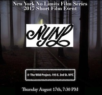

| 
Wild Project Presents...
New York No Limits Film Series: Short Film Event
August 17 @ 7:30PM
New York No Limits Film Series, an on-going collection of screening events, returns August 17th with its second short film program of 2017. New York No Limits programs films that embody the purest vision of the filmmaker without commercial interference. Concurrently, NYNL supports and nurtures the next generation of noteworthy filmmakers by providing a platform for artists to explore and develop his or her cinematic craft.
The August 17th event features a diverse program of short films imbued with the filmmakers vision.
Featuring:
A Beautiful Day
directed by Phedon Papmichael
written by Casey Cannon & Angeliki Giannakopoulos
Gene gets up day after day and follows the same monotonous routine that he has lived since the death of his wife ten years earlier. He is aging fast from illness and loneliness and has given up on the future. Today, however, he awakens with a new determination to end the life he has known. Today, there is a new resolve that will change the course of everything.
Club Policy
written & directed by New Media Ltd
A ferociously competitive couple play a routine game of squash at the Country Club one afternoon. What begins as fun exercise, quickly escalates as the tension explodes between them. True character is revealed as we follow the karmic repercussions of that fateful day on the courts.
Mare Nostrum
directed by Rana Kazkaz and Ana Khalaf
written by Rana Kazkaz
On a Mediterranean shore, a Syrian Father makes a decision that puts his daughter’s life at risk.
Pet Monkey
written and directed by Eric Maira
A date night turns ugly when a persistent boyfriend offers to buy his girlfriend a monkey.
Prerequisite
directed by Geoffrey Guerrero
written by Courtney J. Camerota
A preppy college graduate gets more than she bargained for when she takes a risky second job to offset her student loan debt.
Teapot
directed by Alexander Gruszynski
written by Kimberly Aboltin
Jaime, a newcomer in a women's anger management program, manipulates her sponsor and friends through the guise of her beloved grandmother's teapot in order to confront her ex about the break up text he recently sent her.
The Mess He Made
written and directed by Matthew Puccini
A man reassesses everything as he waits for the results of a Rapid HIV Test in a small American town.
They Charge for the Sun
directed by Terence Nance
written by Eugene Ramos
In a dystopian future where people live nocturnally to avoid the harmful rays of the sun, a young black girl unravels the lie that has kept her and her sister in the dark.
Willy
written and directed by Ben Klein & Violet Columbus
WILLY, an aging television personality, is sick of performing for children. He expresses his desire to create meaningful art, more specifically, songs that speak on the plight of the American Indian. While the rest of the cast and crew attempt to keep the show running smoothly, Willy repeatedly derails the broadcast due to his massive ego and boorish behavior.
|